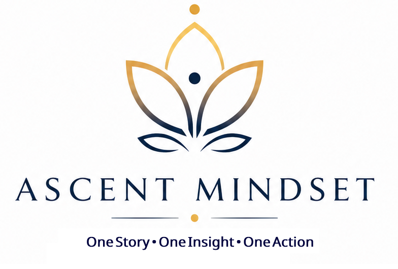

Many people don't fail because they lack talent. They never discover what is possible because self-doubt prevents them from taking the first step.
Join the First ConversationThere was a time in my life when I believed opportunities had passed me by.
Like many people, I experienced uncertainty, self-doubt, and questions about what the future might hold.
I watched others move ahead while wondering whether I still had a place in the professional world.
What I eventually discovered was something powerful.
The biggest obstacle was not the market.
It was not technology.
It was not competition.
The biggest obstacle was the story I was telling myself.
When I started focusing on possibilities instead of limitations, opportunities began to appear.
Small steps led to bigger opportunities.
Confidence grew through action.
Ascent Mindset was born from that realization.
You are often far more capable than you think.
Most people do not fail because they lack talent.
They fail because fear, self-doubt, uncertainty, and overthinking prevent them from taking action.
We believe opportunities are more abundant than we imagine.
The first step changes everything.
Why capable people stay stuck and how to move forward despite uncertainty.
Duration: 30 Minutes
One Story.
One Insight.
One Action.
No motivational hype.
No unrealistic promises.
No complicated theories.
Just honest conversations about confidence, growth, careers, self-belief and possibility.
Every conversation is designed to leave you with:
One Story.
One Insight.
One Action.
Join the next Ascent Mindset Conversation.
Join The Community